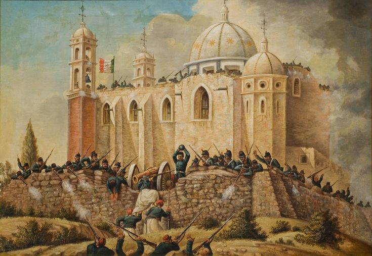
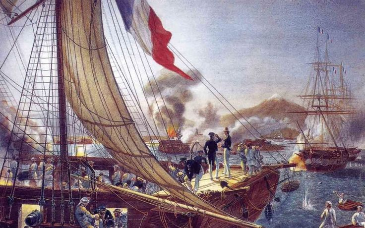

La Invasión de Francia y Estados Unidos
Despues de la constitución 1824
México quedo dividido entre dos bloques
- Liberal
- Buscaba la mayor participación cuidadana, el respeto a la diversidad regional y el equilibrio de poder
- Conservador
- Con mayor rapidez en la toma de decisiones y control uniforme en todo el pais
Invasión de Estados Unidos (1846-1848)

- Comenzó debido a la extensión territorial estadounidense
- En esa época Estados Unidos promovia la idea del Destino Manifiesto, doctrina que afirmaba que ese país tenía el derecho
y la misión de expandirse las tensiones entre ambos paises
- En 1845 Estados Unidos anexó Texas, territorio que México consideraba propio, lo que incremneto las tensiones
entre ambos paises
- El conflicto armado inició oficialmente en 1846
- El episodio más recordado en la Batalla de Chapultepec. Donde un grupo de jovenes cadetes del colegio militar conocidos
como los Niños Heroes, defendieron el Castillo de Chapultepec frente a las tropas estadounidense
- La batalla concluyo en 1848 con la firma del Tratado de Guadalupe Hidalgo
- En consecuencia, Mexico perdió aproximadamente el 55% de su territorio, incluyendo los actuales estados de
- California
- Nuevo México
- Arizona
- Nevada
- Utah
- Colorado
- Wyoming
Antecedentes
- Debido a una crisis económica, el presidente Benito Juarez anunció la suspensión temporal del pago de
la deuda externa a varios paises
- Inglaterra y España llegaron a un acuerdo, pero Francia y Estados Unidos aprovecharon para intentar establecer un imperio en territorio mexicano
La Intervención Francesa (1862-1867)

- El emperador frances Napoleon III buscaba aumentar la influencia de Francia en America y encontró el apoyo de un grupo de
conservadores mexicanos
- En 1862, las tropas francesas intentaron tomar la ciudad de Puebla, pero fueron derrotadas el 05 de Mayo por el ejercito liderado
por Ignacio Zaragosa
- Sin embargo, Francia envió un ejercito más grande y logró ocupar la Ciudad de México
- En 1864 llego al pais Maximiliano de Habsburgo, quien asumio como emperador de México junto con su esposa Carlota,
impulsando reformas liberales, contando unicamente con el apoyo del ejercito
- Mientras tanto, Benito Juarez mantuvo un gobierno republicano itinerante y organizo la resistencia
- El gobierno brindó apoyo diplomatico y politico a Juarez, exigiendo el retiro de las tropas francesas
- Finalmente, Francia retiró su ejercito en 1867 y Maximiliano fue capturado en Queretaro y fusilado; restaurandose la
Republica con el regreso de Benito Juarez a la Cuidad de México